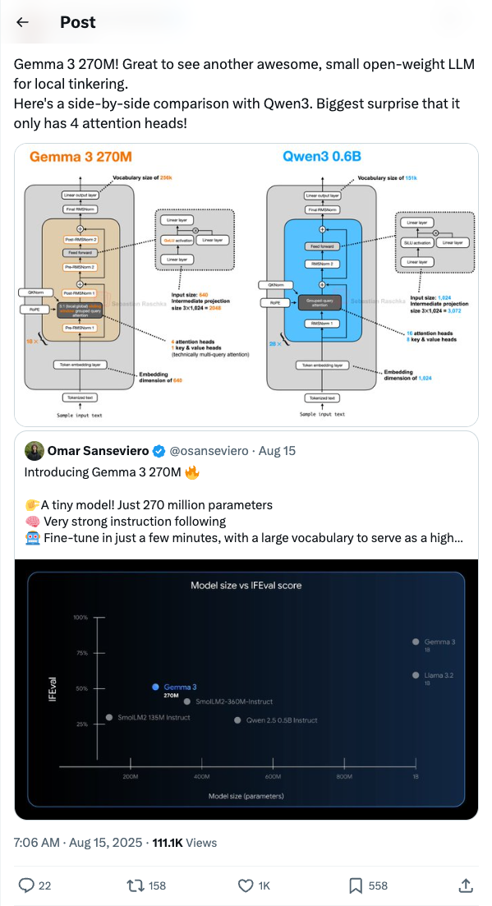
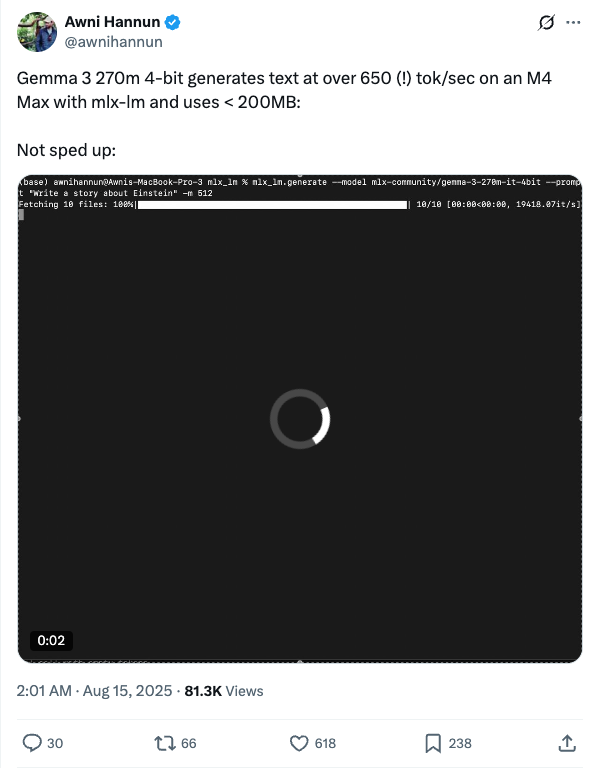
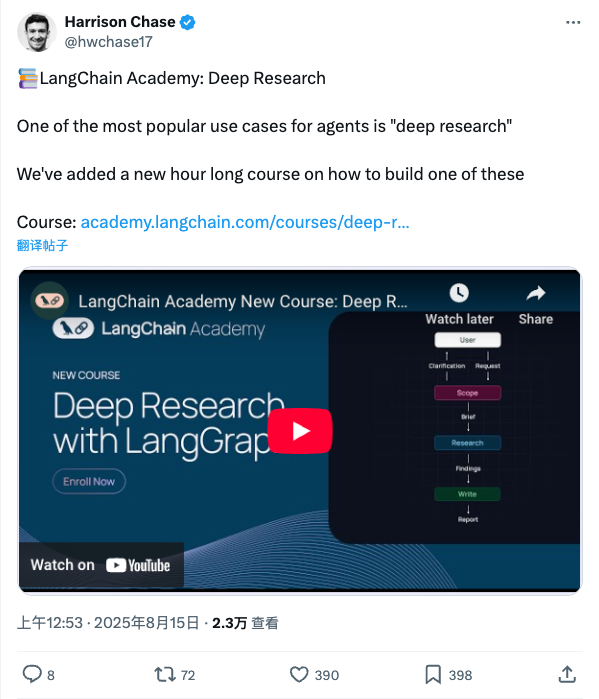

Twitter
rasbt_Gemma 3 270M Release: Powerful Performance from a Small Open-Weight LLM
Published: 2025-08-14T23:06:30.000Z

Sebastian Raschka highlights the release of Gemma 3 270M, a new small open-weight large language model from Google, featuring only 270 million parameters. This compact model demonstrates surprisingly strong instruction following capabilities and can be fine-tuned rapidly. It boasts a large vocabulary, serving as a high-quality foundation for various applications. A notable technical detail is its efficient performance despite having only four attention heads, making it ideal for local experimentation and development.
francoisfleuret_Questioning LLM Universality and Necessity of New Architectures
Published: 2025-08-14T22:35:19.000Z

François Fleuret presents a "hot take," suggesting that the universality of language and the capabilities of Large Language Models (LLMs) might be misleading us. He argues that since chains-of-thought can implement virtually any cognitive process, new model architectures might seem unnecessary. He draws an analogy to the universal representation theorem not rendering convolutional neural networks (convnets) unnecessary, implying that current LLM capabilities should not deter the exploration of novel architectures.
AIatMeta_Introducing DINOv3: A Breakthrough in Self-Supervised Vision Models
Published: 2025-08-14T16:19:02.000Z

Meta AI introduces DINOv3, a state-of-the-art computer vision model trained with self-supervised learning (SSL). It generates powerful, high-resolution image features. For the first time, a single frozen vision backbone in DINOv3 outperforms specialized solutions on multiple long-standing dense prediction tasks, marking a significant advancement in computer vision. This model enhances image feature extraction, bringing substantial performance improvements to related applications.
shai_s_shwartz_Launches FormulaOne Benchmark to Evaluate Frontier AI Model Reasoning
Published: 2025-08-14T12:23:49.000Z

Shai Shalev-Shwartz introduced FormulaOne, a new benchmark designed to evaluate the “PhD-level” reasoning capabilities of frontier AI models on Dynamic Programming problems. The benchmark features three tiers: 'shallow', 'deeper', and 'deepest'. Results indicate that while top models perform adequately on the 'shallow' tier, they struggle significantly with 'deeper' problems, including Grok 4, Gemini-Pro, and Opus-4. Even GPT-5 Pro solves only a few problems, and all models fail completely on the 'deepest' tier, highlighting current AI models' substantial limitations in complex reasoning.
awnihannun_Gemma 3 270M Model Achieves Ultra-Fast Text Generation on M4 Max
Published: 2025-08-14T18:01:09.000Z

Awni Hannun shared the impressive performance of the Gemma 3 270M 4-bit quantized model on the M4 Max chip. Utilizing the mlx-lm library, the model achieved text generation speeds exceeding 650 tokens per second while consuming less than 200MB of memory. This demonstrates the high efficiency and low resource consumption of compact large language models running on Apple hardware, holding significant implications for AI applications on edge devices and personal computers.
hwchase17_LangChain Academy Launches Deep Research Course
Published: 2025-08-14T16:53:03.000Z

Harrison Chase announced that LangChain Academy has launched a new hour-long course titled "Deep Research with LangGraph". This new offering focuses on how to effectively build and utilize AI agents for comprehensive and in-depth information retrieval and analysis, identifying it as one of the most popular and powerful use cases for agents. The course aims to equip learners with practical skills to navigate complex research challenges and apply advanced AI techniques in real-world scenarios, further expanding the capabilities of LangChain's ecosystem.
wechat
Is Chain-of-Thought Reasoning a Mirage? Re-examining Large Language Model Inference from a Data Distribution Perspective, Elon Musk Responds, Grok Breaks Down
Published: 2025-08-14T16:08:29.000Z

A study from Arizona State University reveals that Chain-of-Thought (CoT) reasoning in large language models (LLMs) may not represent true logical deduction but rather a reproduction of patterns within their training data distribution. The research indicates that CoT's generalization capabilities rapidly collapse when tasks deviate from the training data distribution (Out-of-Distribution, OOD), demonstrating fragility across task, length, and format generalization. Using a controllable experimental platform called DataAlchemy, the study confirmed this "mirage" nature, highlighting that CoT's vulnerability is a universal phenomenon, unaffected by model scale or temperature. This finding cautions against blindly relying on CoT in high-stakes domains, suggests that current evaluation methods might overestimate model robustness, and clarifies that supervised fine-tuning only locally extends distribution rather than enhancing abstract reasoning. Future development must acknowledge CoT's generalization limitations and maintain caution in evaluation and deployment.
Omni-Effects: The First Unified Multi-Effect Generation Framework
Published: 2025-08-14T13:22:35.000Z
Omni-Effects introduces an innovative unified framework for diverse customized visual effects (VFX) generation, supporting single, multi, and spatially controllable multi-effect synthesis. It integrates pure prompt-driven generation with Spatial-Aware Prompt (SAP) technology, enabling precise spatial control of effects within videos and complex visual outcomes that adapt to environmental changes. Validated through the comprehensive Omni-VFX dataset and a novel data production pipeline, the framework demonstrates high robustness, capable of generating high-fidelity, diverse VFX composite videos. Its core technical innovations, including LoRA-MoE and SAP, effectively address the challenges of multi-conditional VFX generation. Omni-Effects holds significant application potential in film production, game development, and advertising, representing the first comprehensive solution for controllable multi-effect generation.
Microsoft Introduces GFPO, a Groundbreaking Improvement to DeepSeek GRPO, Reducing Lengthy Responses by 80%
Published: 2025-08-14T04:55:37.000Z
Microsoft researcher Dimitris Papailiopoulos has introduced a groundbreaking reinforcement learning algorithm, Group Filtered Policy Optimization (GFPO), designed to address the issue of lengthy responses generated by models like DeepSeek GRPO. GFPO expands the candidate response pool and explicitly filters for desired properties, enabling it to reduce redundant tokens in inference by up to 80% while simultaneously improving accuracy. This algorithm eliminates the need for complex reward engineering, allowing for the joint optimization of multiple response attributes such as conciseness and accuracy. Experimental results demonstrate that GFPO significantly shortens responses across various difficulty levels. Notably, its adaptive difficulty variant efficiently balances computational cost and accuracy when tackling complex problems, and it effectively mitigates length inflation in out-of-distribution tasks, establishing a new paradigm for efficient reinforcement learning.
HERMES: A Unified Self-Driving World Model for Simultaneous 3D Scene Understanding and Generation
Published: 2025-08-14T04:55:37.000Z

HERMES introduces the first unified self-driving world model, designed to bridge the critical gap between comprehensive 3D scene understanding and accurate future scene generation. This innovative model leverages a shared Large Language Model (LLM), a unified Bird's-Eye View (BEV) feature space, and a novel World Queries mechanism. This architecture enables HERMES to achieve deep comprehension of complex urban environments, such as identifying specific landmarks and traffic conditions, alongside precise prediction of future dynamics, like vehicle and pedestrian movements. Extensive experiments on datasets including nuScenes demonstrate HERMES's superior performance; its generation accuracy significantly surpasses existing separate models, while its understanding capabilities remain robust. The model's multi-task comparative results underscore its powerful integrated abilities, offering a new, efficient paradigm for developing more intelligent and reliable autonomous driving systems and paving the way for general-purpose driving foundation models.
Kunlun Wanwei Launches Skywork Deep Research Agent V2, Revolutionizing Multimodal Research and Browser Automation
Published: 2025-08-14T04:55:37.000Z
Kunlun Wanwei has officially launched Skywork Deep Research Agent V2, a groundbreaking AI agent model that revolutionizes multimodal deep research and browser automation. This new iteration excels in processing both textual and visual information, setting new SOTA records on authoritative benchmarks like BrowseComp and GAIA, surpassing leading domestic and international competitors. The V2 introduces advanced multimodal information retrieval, an asynchronous parallel multi-agent architecture, and integrated result presentation capabilities, effectively addressing the limitations of traditional text-only research. Furthermore, its multimodal deep browser agent overcomes common efficiency and stability bottlenecks of conventional browser agents, enabling in-depth social media content analysis and visual report generation. This launch signifies Kunlun Wanwei's significant progress in AI application deployment and full-stack development, indicating a strategic shift in the AI industry's focus from singular general large models to building comprehensive toolchains and application ecosystems.
Boosting AI Multi-Domain Reinforcement Learning Capabilities by Integrating Math, Programming, and Logic Data | Shanghai AI Lab
Published: 2025-08-14T04:00:26.000Z
The OpenDataLab team at Shanghai AI Lab has developed a multi-domain evaluation framework encompassing mathematics, programming, and logic puzzles, thoroughly analyzing the complex mechanisms of Reinforcement Learning with Verifiable Rewards (RLVR) in multi-domain reasoning. Their research, based on the Qwen2.5-7B series models, reveals that joint training across these three domains significantly boosts overall average performance to 56.57, outperforming any dual-domain combination. Key findings include: mutual support between logic and mathematical abilities, cross-domain effects of code reasoning, enhanced robustness with diversified data, improved RL effectiveness through SFT, critical importance of template consistency, benefits of Policy Refresh, necessity of task-adaptive reward design, and RLVR's sensitivity to language. This study emphasizes that multi-domain joint training effectively prevents performance "collapse" in specific tasks, ensuring balanced model development and offering new perspectives for optimizing large model reasoning capabilities.
GitHub
FastAPI-MCP
Published: 2025-08-10T09:07:00Z

FastAPI-MCP is an innovative Python library designed to seamlessly expose FastAPI API endpoints as Model Context Protocol (MCP) tools, complete with built-in authentication. This project adopts a FastAPI-native approach, distinguishing itself from mere OpenAPI converters, and supports zero or minimal configuration. It automatically preserves the schemas of request and response models, as well as Swagger documentation. Key advantages include efficient communication via FastAPI's ASGI interface and flexible deployment options, allowing it to function either as an extension to an existing FastAPI application or as a standalone service. By offering native dependency management and a unified infrastructure, FastAPI-MCP significantly streamlines the integration of existing FastAPI services into the MCP ecosystem, making it particularly suitable for developing and managing AI-powered tools.
SpatialLM
Published: 2025-06-10T02:58:45Z

SpatialLM is an innovative 3D large language model specifically engineered to interpret and process complex 3D point cloud data. Its primary function is to generate highly structured 3D scene understanding outputs, which encompass detailed architectural elements like walls, doors, and windows, as well as precisely oriented object bounding boxes complete with their semantic categories. A key advantage of SpatialLM is its versatility in handling point clouds derived from a wide array of sources, including monocular video sequences, RGBD images, and LiDAR sensors, thereby overcoming limitations of previous methods requiring specialized equipment. This multimodal architecture effectively bridges the critical gap between raw, unstructured 3D geometric data and refined, structured 3D representations, offering a high-level semantic understanding of environments. Furthermore, SpatialLM 1.1 introduces advanced capabilities such as doubled point cloud resolution, a more powerful point cloud encoder (Sonata), and the ability to perform detection based on user-specified categories, leveraging the flexibility of LLMs. These features collectively enhance spatial reasoning, making SpatialLM highly valuable for cutting-edge applications in embodied robotics, autonomous navigation, and sophisticated 3D scene analysis tasks.
Magentic-UI
Published: 2025-08-14T17:46:34Z

Magentic-UI is a cutting-edge research prototype of a human-centered interface, leveraging a sophisticated multi-agent system to automate complex web tasks while ensuring users retain full control. It excels at browsing and performing actions on the web, generating and executing code, and analyzing various file types, addressing scenarios from form filling to deep website navigation and data-driven code execution. Built on the AutoGen framework, Magentic-UI provides a transparent and highly controllable interaction paradigm, fostering efficient human-in-the-loop involvement. Its core functionalities include collaborative planning (Co-Planning), guided task execution (Co-Tasking), robust security measures (Action Guards), intelligent plan learning and retrieval from past runs, and efficient parallel task execution. This innovative approach significantly boosts human-agent interaction efficiency, making it an ideal solution for intricate web navigation, data extraction, and automated data processing challenges, as demonstrated by its performance on benchmarks like GAIA and AssistantBench.
Marker
Published: 2025-08-15T23:20:30Z

Marker is an efficient and accurate document conversion tool, supporting various file formats such as PDF, images, Office documents, HTML, and EPUB, converting them into Markdown, JSON, chunks, or HTML. Its core features include intelligent recognition and formatting of complex elements like tables, equations, and code blocks, with support for all languages. Marker outperforms existing cloud services and open-source solutions in performance. Furthermore, it can significantly enhance conversion accuracy and structured data extraction capabilities by integrating Large Language Models (LLMs), particularly excelling in table recognition. The tool supports GPU/CPU/MPS operation, offering flexible API and CLI interfaces, making it widely applicable in document digitization, content management, and RAG data preparation.
huggingface
Seeing, Listening, Remembering, and Reasoning: A Multimodal Agent with
Long-Term Memory
Published: 2025-08-13T12:03:03.000Z

We introduce M3-Agent, a novel multimodal agent framework equipped with
long-term memory. Like humans, M3-Agent can process real-time visual and
auditory inputs to build and update its long-term memory. Beyond episodic
memory, it also develops semantic memory, enabling it to accumulate world
knowledge over time. Its memory is organized in an entity-centric, multimodal
format, allowing deeper and more consistent understanding of the environment.
Given an instruction, M3-Agent autonomously performs multi-turn, iterative
reasoning and retrieves relevant information from memory to accomplish the
task. To evaluate memory effectiveness and memory-based reasoning in multimodal
agents, we develop M3-Bench, a new long-video question answering benchmark.
M3-Bench comprises 100 newly recorded real-world videos captured from a robot's
perspective (M3-Bench-robot) and 929 web-sourced videos across diverse
scenarios (M3-Bench-web). We annotate question-answer pairs designed to test
key capabilities essential for agent applications, such as human understanding,
general knowledge extraction, and cross-modal reasoning. Experimental results
show that M3-Agent, trained via reinforcement learning, outperforms the
strongest baseline, a prompting agent using Gemini-1.5-pro and GPT-4o,
achieving 6.7%, 7.7%, and 5.3% higher accuracy on M3-Bench-robot, M3-Bench-web
and VideoMME-long, respectively. Our work advances the multimodal agents toward
more human-like long-term memory and provides insights into their practical
design. Model, code and data are available at
https://github.com/bytedance-seed/m3-agent
Stand-In: A Lightweight and Plug-and-Play Identity Control for Video
Generation
Published: 2025-08-11T12:17:38.000Z

Generating high-fidelity human videos that match user-specified identities is
important yet challenging in the field of generative AI. Existing methods often
rely on an excessive number of training parameters and lack compatibility with
other AIGC tools. In this paper, we propose Stand-In, a lightweight and
plug-and-play framework for identity preservation in video generation.
Specifically, we introduce a conditional image branch into the pre-trained
video generation model. Identity control is achieved through restricted
self-attentions with conditional position mapping, and can be learned quickly
with only 2000 pairs. Despite incorporating and training just sim1\%
additional parameters, our framework achieves excellent results in video
quality and identity preservation, outperforming other full-parameter training
methods. Moreover, our framework can be seamlessly integrated for other tasks,
such as subject-driven video generation, pose-referenced video generation,
stylization, and face swapping.
AMFT: Aligning LLM Reasoners by Meta-Learning the Optimal
Imitation-Exploration Balance
Published: 2025-08-09T11:40:54.000Z

Large Language Models (LLMs) are typically fine-tuned for reasoning tasks
through a two-stage pipeline of Supervised Fine-Tuning (SFT) followed by
Reinforcement Learning (RL), a process fraught with catastrophic forgetting and
suboptimal trade-offs between imitation and exploration. Recent single-stage
methods attempt to unify SFT and RL using heuristics, but lack a principled
mechanism for dynamically balancing the two paradigms. In this paper, we
reframe this challenge through the theoretical lens of implicit
rewards, viewing SFT and RL not as distinct methods but as complementary
reward signals. We introduce Adaptive Meta Fine-Tuning (AMFT), a novel
single-stage algorithm that learns the optimal balance between SFT's implicit,
path-level reward and RL's explicit, outcome-based reward. The core of AMFT is
a meta-gradient adaptive weight controller that treats the SFT-RL
balance as a learnable parameter, dynamically optimizing it to maximize
long-term task performance. This forward-looking approach, regularized by
policy entropy for stability, autonomously discovers an effective training
curriculum. We conduct a comprehensive evaluation on challenging benchmarks
spanning mathematical reasoning, abstract visual reasoning (General Points),
and vision-language navigation (V-IRL). AMFT consistently establishes a new
state-of-the-art and demonstrats superior generalization on out-of-distribution
(OOD) tasks. Ablation studies and training dynamic analysis confirm that the
meta-learning controller is crucial for AMFT's stability, sample efficiency,
and performance, offering a more principled and effective paradigm for LLM
alignment.Our codes are open-sourced via https://github.com/hlxtsyj/AMFT.
VisCodex: Unified Multimodal Code Generation via Merging Vision and
Coding Models
Published: 2025-08-13T17:00:44.000Z

Multimodal large language models (MLLMs) have significantly advanced the
integration of visual and textual understanding. However, their ability to
generate code from multimodal inputs remains limited. In this work, we
introduce VisCodex, a unified framework that seamlessly merges vision and
coding language models to empower MLLMs with strong multimodal code generation
abilities. Leveraging a task vector-based model merging technique, we integrate
a state-of-the-art coding LLM into a strong vision-language backbone, while
preserving both visual comprehension and advanced coding skills. To support
training and evaluation, we introduce the Multimodal Coding Dataset (MCD), a
large-scale and diverse collection of 598k samples, including high-quality HTML
code, chart image-code pairs, image-augmented StackOverflow QA, and algorithmic
problems. Furthermore, we propose InfiBench-V, a novel and challenging
benchmark specifically designed to assess models on visually-rich, real-world
programming questions that demand a nuanced understanding of both textual and
visual contexts. Extensive experiments show that VisCodex achieves
state-of-the-art performance among open-source MLLMs and approaches proprietary
models like GPT-4o, highlighting the effectiveness of our model merging
strategy and new datasets.
AWorld: Dynamic Multi-Agent System with Stable Maneuvering for Robust
GAIA Problem Solving
Published: 2025-08-13T15:46:25.000Z

The rapid advancement of large language models (LLMs) has empowered
intelligent agents to leverage diverse external tools for solving complex
real-world problems. However, as agents increasingly depend on multiple tools,
they encounter new challenges: extended contexts from disparate sources and
noisy or irrelevant tool outputs can undermine system reliability and accuracy.
These challenges underscore the necessity for enhanced stability in agent-based
systems. To address this, we introduce dynamic supervision and maneuvering
mechanisms, constructing a robust and dynamic Multi-Agent System (MAS)
architecture within the AWorld framework. In our approach, the Execution Agent
invokes the Guard Agent at critical steps to verify and correct the reasoning
process, effectively reducing errors arising from noise and bolstering
problem-solving robustness. Extensive experiments on the GAIA test dataset
reveal that our dynamic maneuvering mechanism significantly improves both the
effectiveness and stability of solutions, outperforming single-agent system
(SAS) and standard tool-augmented systems. As a result, our dynamic MAS system
achieved first place among open-source projects on the prestigious GAIA
leaderboard. These findings highlight the practical value of collaborative
agent roles in developing more reliable and trustworthy intelligent systems.
Echo-4o: Harnessing the Power of GPT-4o Synthetic Images for Improved
Image Generation
Published: 2025-08-13T17:59:28.000Z

Recently, GPT-4o has garnered significant attention for its strong
performance in image generation, yet open-source models still lag behind.
Several studies have explored distilling image data from GPT-4o to enhance
open-source models, achieving notable progress. However, a key question
remains: given that real-world image datasets already constitute a natural
source of high-quality data, why should we use GPT-4o-generated synthetic data?
In this work, we identify two key advantages of synthetic images. First, they
can complement rare scenarios in real-world datasets, such as surreal fantasy
or multi-reference image generation, which frequently occur in user queries.
Second, they provide clean and controllable supervision. Real-world data often
contains complex background noise and inherent misalignment between text
descriptions and image content, whereas synthetic images offer pure backgrounds
and long-tailed supervision signals, facilitating more accurate text-to-image
alignment. Building on these insights, we introduce Echo-4o-Image, a 180K-scale
synthetic dataset generated by GPT-4o, harnessing the power of synthetic image
data to address blind spots in real-world coverage. Using this dataset, we
fine-tune the unified multimodal generation baseline Bagel to obtain Echo-4o.
In addition, we propose two new evaluation benchmarks for a more accurate and
challenging assessment of image generation capabilities: GenEval++, which
increases instruction complexity to mitigate score saturation, and
Imagine-Bench, which focuses on evaluating both the understanding and
generation of imaginative content. Echo-4o demonstrates strong performance
across standard benchmarks. Moreover, applying Echo-4o-Image to other
foundation models (e.g., OmniGen2, BLIP3-o) yields consistent performance gains
across multiple metrics, highlighting the datasets strong transferability.